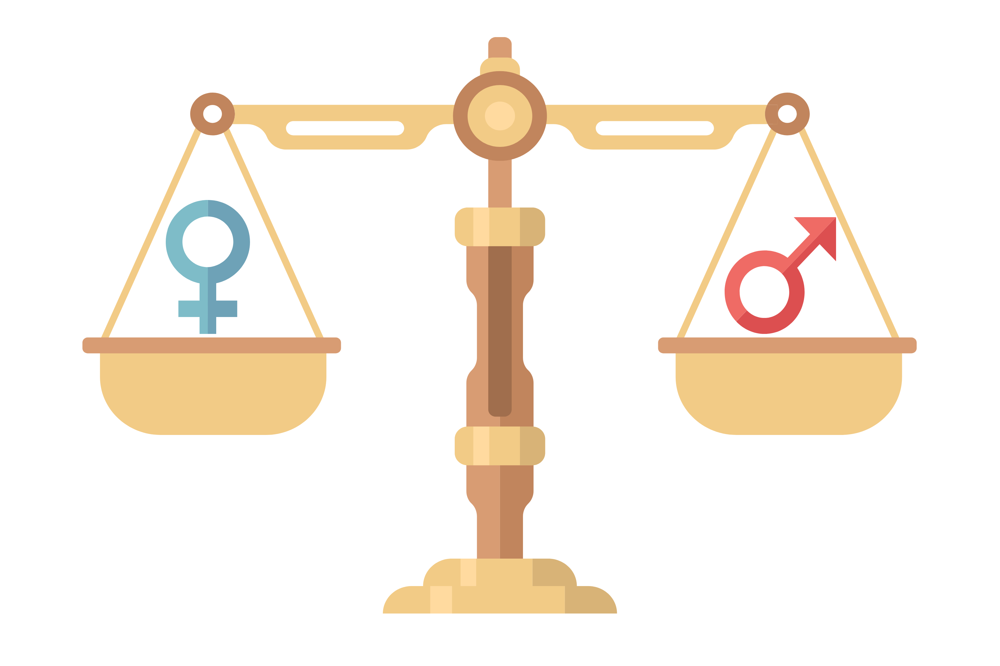

I analyzed 10,000+ marketplace transactions using Python to uncover key sales trends. The top 20% of products generated 80% of revenue, weekend sales were 25% higher, and COD accounted for 60% of orders. Order cancellations were around 10%, highlighting operational improvements. These insights help optimize inventory, boost sales, and improve customer experience.

I analyzed 15,000+ credit card transactions using SQL to uncover key financial trends. The top 10% of customers accounted for 45% of total transaction value, and high-spending transactions represented 30% of monthly revenue. Online payments made up 65% of all transactions, while transaction anomalies were around 5%, indicating potential risk areas. These insights help optimize operations, improve fraud monitoring, and target high-value customer segments.

I built an interactive Power BI dashboard that visualizes key metrics (revenue trends, customer behavior, and operational performance). The report enables dynamic filtering by time periods and categories, helping stakeholders spot sales spikes, track underperforming segments, and make data‑driven decisions in real time.
💡 Business Impact: This dashboard empowers decision-makers to optimize resource allocation, identify growth opportunities, and quickly react to changing business conditions.
In this project, I explore a comprehensive dataset of salaries for 2024 to identify key trends and insights.

In this project, I delve into a dataset of restaurant reviews to uncover insights and trends.